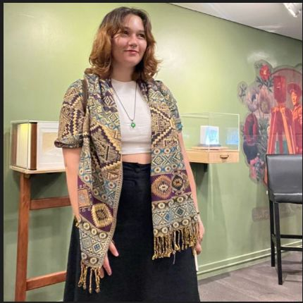
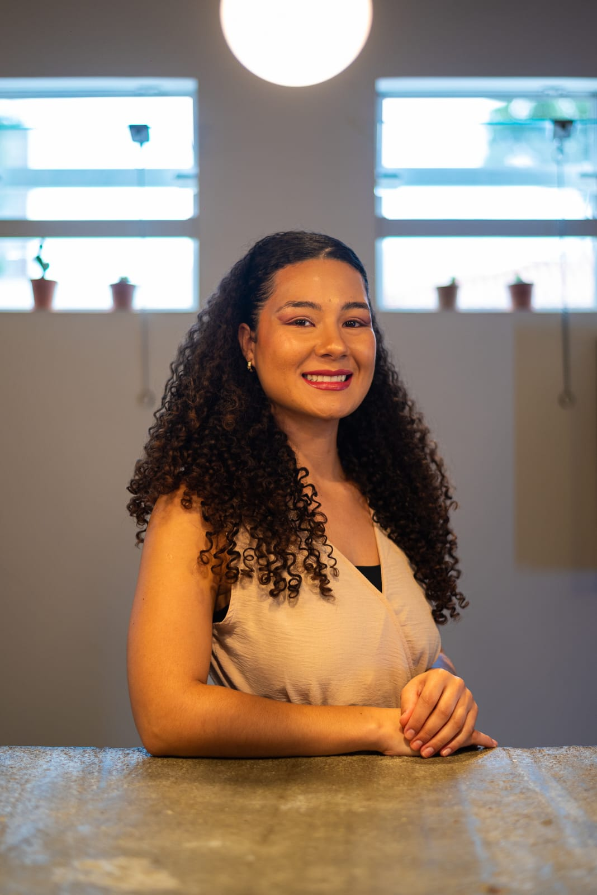

"Olá! Aqui você conhece a história do CapiSafe, as pessoas que o criaram e por que uma capivara detetive é a mascote perfeita para te proteger online. Afinal, a capivara se dá bem com todo mundo — e a internet segura também deveria ser assim!"
Uma internet segura para todos os brasileiros
O CapiSafe é uma plataforma comunitária de combate a golpes virtuais no Brasil. Nasceu da convicção de que a educação digital é a principal arma contra fraudes cibernéticas — e que ela precisa chegar a todos: do jovem ao idoso, do norte ao sul do país.
Combinamos inteligência artificial, relatos anônimos da comunidade e conteúdo educativo oficial (NIC.br, CGI.br, CERT.br) para criar um sistema de proteção coletiva e acessível — sem cadastro, sem julgamento.
Por que CapiSafe?
O nome combina "Capi" — referência direta à capivara, nossa mascote — com "Safe", palavra em inglês que significa seguro. A junção é bilíngue, moderna e carrega em duas sílabas toda a proposta do projeto: um lugar digital seguro, identificado com o Brasil e a cultura da capivara.
"CapiSafe funciona em português e inglês simultaneamente — assim como queremos que nossa plataforma funcione: universal, inclusiva e reconhecível por todos."
Quem Somos
O CapiSafe nasceu da parceria de duas jovens comprometidas com um único objetivo: tornar a internet um lugar mais seguro para todos os brasileiros.

Formação em Direito, Políticas Públicas e Data Science pelo Insper. Analista de Legal Operations na Monteiro e Monteiro Advogadas. Delegação Youth 2026 no FIB Belém/PA.

Formação em Direito. Advogada. Mestranda em Gestão Urbana pela PUC Paraná. Delegação Youth 2026 no FIB Belém/PA.
"Toda vez que alguém perde dinheiro para um golpe virtual, é porque não teve acesso à informação a tempo. O CapiSafe existe para mudar isso — de forma gratuita, anônima e para todos."
Para quem é o CapiSafe?
Nossa plataforma foi desenhada para ser útil a públicos diversos, com canais adaptados a cada perfil de usuário.
Usuários habituados a navegar na web. O site oferece análise completa de relatos, histórico público, jogo educativo e conteúdo de referência — com interface rica e interativa.
Via WhatsApp, canal mais acessível do Brasil. A CapiBot responde em linguagem simples e direta: manda a mensagem suspeita, recebe o diagnóstico. Sem precisar abrir site ou instalar app.
A Academia Capi e o jogo educativo podem ser usados em sala de aula. Conteúdo alinhado às diretrizes do CGI.br e NIC.br, com linguagem pedagógica e cenários da realidade brasileira.
Apoios e Referências
O CapiSafe é construído sobre os princípios e dados das principais instituições brasileiras de governança e segurança da internet: